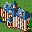
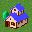
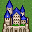

☆アナザーレジェンズとは☆
経済界の熱い戦いを描いた(？)別ルール版、いわゆるR.A.外伝です。
☆基本ルール☆
ターン処理に関しては、以下のようになります。
職場･採掘場などからの収入⇒コマンド⇒資金０⇒単ヘックス(税収･遊園地など)⇒全体処理(災害など)
つまり、使用出来るコマンドの上限は、そのターンに得られる収入の金額までとなります。
コマンド使用後に得た金額と職場･採掘場からの収入見込みの合計が経済力としてptsに表示され、
順位を争う要素となります。
☆ノーマル版と違う点☆…基本的にはR.A.に準拠します。
・島発見時の開発度が少し異なります。
・税収は金額に関わらず、毎ターン行なわれます。
・コマンドコストが異なります。
・倉庫はセキュリティーＬＶ％の手数料を毎ターン取られるようになります。
・大使館はコマンド終了時に余った資金の10%を寄付するようになります。
・ハイテク企業はコマンド終了時に余った資金の半分を寄付するかわりにコストが2/3になります。
| ランク |
外見 |
名前 |
昇格Point値 |
ランク |
外見 |
名前 |
昇格Point値 |
| ０ |
|
小屋 |
20000以下 |
５ |
 |
大豪邸 |
60000〜70000 |
| １ |
 |
簡易住宅 |
20000〜30000 |
６ |
|
高級豪邸 |
70000〜80000 |
| ２ |
|
住宅 |
30000〜40000 |
７ |
|
城 |
80000〜90000 |
| ３ |
|
高級住宅 |
40000〜50000 |
８ |
 |
巨城 |
90000〜100000 |
| ４ |
|
豪邸 |
50000〜60000 |
９ |
|
黄金城 |
100000以上 |
☆備考☆
・自宅・倉庫・大学などをうまく使い収入を上げていくことが開発の第一歩です。
・資金援助を行なう場合、何ターンに何々のコマンドを使いたいのでいくら援助お願いします、
などといったように前もっての打ち合わせが必要になります。
援助とコマンドが前後するといったような可能性もあり運も必要になります。
・最初のターンは高額を持っての開始なので、よく考えてコマンドして下さい。
最初のコマンドが運命の分かれ目かも！？
・自島が借金をしている場合(資金がマイナス)、そのターンに放棄された島があった際に
みちづれゲームオーバーになることがあります。借金には気をつけましょう。
・ターン賞時に遊園地・油田などを作り逆転ターン賞なども狙えます。
・難易度高めですが、のんびりと島作りできると思います。
・追加改造時にはノーマルR.A.とともに更新されます。